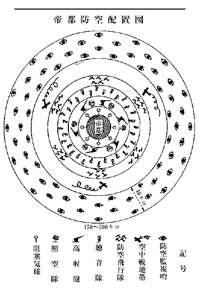
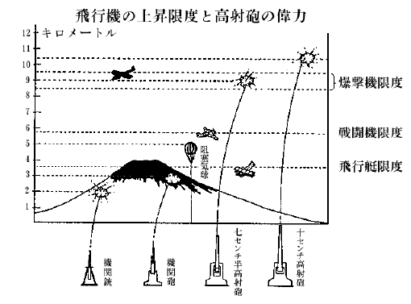

| 空襲下の日本 | |
| 海野 十三 | |
| (2012) | |
空襲下の日本
海野十三
――昭和×年三月、帝都郊外の若きサラリーマンの家庭――
「まあ、今日はお帰りが遅かったのネ」
「うんフラフラになる程疲労
れちまったよ」
「やはり会社の御用でしたの」
「そうなんだ。会社は東京の電灯を点
けたり、電車を動かしたりしているだろう。だから若
し東京が空襲されたときの用心に、軍部の方々と寄り合って、いろいろと打合わせをしたんだよ」
「空襲ですって！ 空襲って、敵の飛行機のやってくることですか」
「うん」
「まあ、そんなことを、今からもう考えて置くんですの。気が早いわねエ」
「気が早かないよ。すこし遅い位いなんだ。尤
も相談は前々からやってある。『東京非常変災要務規定』などいうものが、もう三年も前に、東京警備司令部、東京憲兵隊、東京市役所、東京府庁、警視庁の協議できまっているんだからね。今やっているのは、その後いろいろ変更になった事についてなんだよ」
「あら、そうだったの。それは東京だけに、空襲の相談が出来ているのですか。大阪だの九州だのはどうなんです」
「そりゃ、どこもかしこも、日本中はみな出来ているよ。防空演習なんか、むしろ地方が盛んで、東京なんか、まだ一度もやらないぐらいなんだ。どうかと思うよ」
「そんなことないわ。先達
て、浅草でやったじゃないの」
「大東京全部として、やったことはない。しかしいよいよ近々、やるそうだが、きわどいところで役に立つんだ」
「きわどいところでなんて、本当に東京は空襲されるの」
「そりゃ、当りまえだよ」
「噓おっしゃい。飛行機もうんとあるし、それにこんな離れた島国へなんぞ、どうしてそう簡単に攻めて来られるものですか」
「ところが、そうじゃないんだよ。来るに決っているんだから、もう覚悟をしときなさい。第一、今日会った軍部の方がそうおっしゃるのだから、間違いはないよ。東京は必ず空襲されるに決っているトサ」
「いやーネ。それじゃ、陸海軍の航空隊も、高射砲も、なんにもならないんですの」
「なることはなるけれど、陸戦や海戦と違って、敵を一歩も入らせないなどという完全な防禦は、空中戦では出来ない相談なんだ」
「どうして？」
「それはね、世界の空中戦の歴史を調べてもわかることだし、考えて見てもサ、空中戦は大空のことだからね」
そこで彼は飛行機の侵入論を手短かに語った。今ここに二重三重の空中防備をして置いたとしても、敵の何千、何百という飛行機が一度に攻めてくると、何しろ速度も早いし、その上敵味方が入り乱れて渡りあっているうちには、どこかに網の破れ穴のように隙が出来て、そこを突破される虞
れがある。ことに夜間の襲撃なんて到底平面的な海戦などの比でない。こっちは高度五千メートルぐらいまでを、それぞれの高さに区分して警戒していても、向うの爆撃機が八千メートルとか九千メートルとかの高度でそっと飛んでくれば、これはわからない。わかったとしてもそういう高度では、ちょっと戦闘機も昇ってゆきかねるし、下から高射砲で打とうとしても、夜間の事でうまく発見して覘
い撃つことも出来ないという訳で、どこか抜ける。そこを、たとえ爆撃機の五台でも六台でも入ってくれば、これはもう可なりの爆撃力を持っている事などを語った。
「その爆弾をおとされると、丸ビルの十や二十をぶちこわす事なんざ、何でもない。東京は見る見るうちに灰になってしまうだろうよ」
「敵の大将のような憎らしい口を利
くのね。その爆弾は、よほど沢山積んでくるの」
「千キロや二千キロ積んでいるのは、沢山あるよ。最も怖るべきは焼夷弾だ。爆発したら三千度の高熱を発していくら水を掛けて消そうとしても、水まで分解作用を起して燃えてしまう。頑丈な鉄骨も熔ける位だから、東京のような木造家屋の上からバラ撒かれたら大震災のように荒廃させるのは、雑作もないということだ」
そこで彼は、知っている限りの爆弾の知識を語り出した。
爆弾にはいろいろと種類がある。破片爆弾というのがあるが、これは重さが五十キロ以上のものと決まっているようだが、目的は人間だの馬だのを殺すのである。それから地雷弾というのがあって、これは地雷と同じような効目があるので、あまり堅固でない物を破壊するためのもの。それから破甲弾というのは、鉄橋とかコンクリートなどのように堅固な構造物を破壊するために使用する。これが普通にいう爆弾で、いろいろの大きさのものがある。
重さが十二キロのものは、爆発すると直径が五メートルもある大孔を穿
つ。そして十メートル以内の窓硝子
を破損し、木造家屋ならば、もう使用出来ない程ひどく壊してしまう。すこし大きくて重さ二十五キロになると、孔の直径七メートル、五メートル以内にある家屋の堅固な石壁を壊す。五十キロのものでは直径九メートル、百キロの爆弾なら直径が十一メートルの孔を造る。この辺のものになると十メートル以内の堅固な石壁も破ってしまう。更に大きい爆弾で二百キロ、三百キロ、五百キロ、二千キロというようなところまである。各々
直径十三メートル、十五メートル、十七メートル、二十メートルといった孔が出来る。
五百キロ、一トンなどという人間の背ほどの大きさの爆弾になると附近に落ちたばかりで、爆発によって生ずる空気の圧力で大きい家屋も粉砕してしまう。命中すると、丸ビルのような大建築物も粉砕するという実に恐ろしいもの。
「まあ、私たちはどうすればいいの？」
妻君が心配そうな顔をして叫んだ。
「そりゃもう、大変なことになる。お前と僕とはチリヂリ別れ別れさ。僕は警備員なんかに徴集され、お前のような女達は、甲州の山の中へでも避難することになるだろう。しかし逃げるのが厭なら、お前も働くのだよ。例えば避難所や消毒所で働くのだよ」
「避難所や消毒所？ それ、なアに」
「避難所は毒瓦斯
の避難所だ。大きい小学校とか、映画館とか、銀行とかいった丈夫な建物を密閉して、そこへは毒瓦斯が侵入しないように予
め用意をして置いて、さあ毒瓦斯が来たというときには、往来に悲鳴をあげている民衆を呼んでやるところさ。消毒所は、もう毒瓦斯が地面を匍
ってやって来て、そいつのために中毒して道路の上に倒れる人が一時に沢山出来るわけだが、その人達を担架
に乗せて消毒所に収容し、解毒法を加える役目なんだ」
「そんなところで働く方がいいわ。しかし一体、戦争は始まるのかしら。そして空襲されるとしたら、一番どこからされ易
いの」
「それは第一が中華民国の上海
とか広東
とかいった方面から。第二は露西亜
のウラジオから。第三は太平洋方面あるいはアラスカ方面から」
「まア、どの国も、日本を狙っている国ばかりなのね。しかし本当に戦争は起って？」
丁度そのとき、号外の鈴が、けたたましく辻の彼方からひびいてきた。
「オヤ」
防空隊の組織一覧表
┌─防空飛行隊
┌直接機関┤─高射砲隊
（軍部担当） │ │─高射機関銃隊
┌積極的防空機関┤ └─阻塞及び放流気球隊
│ │ ┌─防空監視哨
│ └補助機関┤─聴音隊
防空司令官┤ │─照空隊
│ └─通信隊
│
│ ┌─消防隊
│ │─燈火管制班
└消極的防空機関 ────│─偽装遮蔽班
（軍民協力または │─避難所管理班
民衆担当） │─情報班
└─警備班
「号外よ。どうしたのでしょう」
思いついて、ラジオをひねってみたところ、いつもとは違ってアナウンサーの上ずった声が、容易ならぬ臨時ニュースを放送していた。
「帝国政府は、中華民国へ向って航空兵器をこの上輸出する国あらば、これを国防の精神によって、該兵器を没収することを内外に宣言いたしました。これによって対外関係はいよいよ悪化し、帝国政府は遂に宣戦布告を決意したものと見られています。......」
孤立の日本の上には、もう今日明日に迫って爆弾の雨が降ろうとしているのだ。
「僕は洋服に着換えていよう」
夫は妻君の方へ、緊張しきった面を向けたのだった。
――昭和×年、某国某所のナイト・クラブの一室にて――
「ねえジョン。お前さん、いよいよ出掛けるのかい」
女は男の膝の上で突然に尋ねた。
「そうさ、メアリーよ。もう命令一つで、吾が国
におさらばだよ」
「大丈夫？ 日本の兵士達は強いというじゃないの」
「なに心配はいらない。いくら強くても、わが国の飛行機の優秀さにはかなわないよ。ボーイング機、カーチス機、ダグラス機、こんなに優秀な飛行機は、世界中探したってどこにもない。そして乗り手は、このジョン様だもの、日本を粉砕するなんざ、わけはないさ」
「そう聞くと、たのもしい気もするけれど、あの東洋の島国を、どう攻めてゆくつもり？」
「そりゃ判っているよ」そこで男は女を側に下ろすと、ソファの上で肘を張った。「サラトガ、レキシントンなどという航空母艦四隻は勿論のこと、目下建造下のものも出来るだけ間に合わせ、太平洋を輪形陣
で攻めてゆくのさ。母艦の上空には、アクロン、メーコン、ロスアンゼルス、などの大飛行船隊を飛ばしてさ、その周囲は、いつも航空母艦の上から、俺たちが交
る交る飛び出して警戒の任に当っている。これの偉力は、映画『太平洋爆撃隊』にも撮ったことがあるが、知るものぞ知るで、まず空中無敵艦隊だね」
「しかし、そう容易に太平洋が渡れるの、ジョン」
「そこはプラット提督が、永年研究しているところだよ。大西洋艦隊が太平洋に廻って、一緒に練習をやっているのは、伊達
じゃない。わが国の兵器は、正確で恐ろしい偉力をもっている。演習で、その正確さについてもよく合点がいったし、われわれも訓練上の尊い経験を得た」
「ハワイまでは行けても、それから先は、日本の潜水艦が襲撃してきて、サラトガの胴中に穴があきゃしないこと」
「なアに、優秀な航空隊、それに新造の駆逐艦隊に爆雷を積んで、ドンドン海中へ抛
げこめばわけはないんだよ。そして現にわれわれは、ハワイの線を越えて、もっと日本の近海に接近したことがあるんだよ。自信はある。小笠原群島に、われわれの根拠地を見出すことも簡単な仕事だ。東京を海面から襲撃するのも、きっと成功するよ」
男は得意の絶頂にのぼりつめて、この上は往来へ飛び出して演説をしたいくらいだった。
「アラスカの方からは、攻めて行かないのかしら」
女は又訊いた。
「アラスカからも行くとも。飛行場はウンと作ってあるからね。千島群島から、北海道を経て、本州へ攻めてゆくのだが、ブロムリー中尉、ハーンドーン、バングボーン両君、わがリンドバーク大佐、などという名パイロットが日本へ行って、よく調べて来てあるんだ。今にその人達の知識が素晴らしく役に立つときが来るのだよ」
「ほう。何て勇ましい、あの人たちの働きでしょう」
「日本だけではない、中国へも行って、調べてある。ロバート・ショートは上海
で死んだが、リンドバーク大佐は残念がっていられる。大佐は中国まで行って、よく調べてきた。中国へ飛行機を送っておいて、ここを根拠地として日本へ襲撃すれば、七時間くらいで東京へ達する。北九州を攻めるんだったら、その半分の三時間半で、間に合う」
「中国は、わが米国と一緒に対日宣戦をすれば、中国全土がわが空軍の根拠地になるわけなのね」
「中国だけでない。ソヴィエート露西亜
も日本とはいつ戦端を開くかわからない。そうすれば浦塩
から東京まで、四時間あれば襲撃できる」
「フィリッピン群島からは」
「これも出来ないことはない。勿論、空軍の根拠地としては、まことにいいところだ。しかしこれは日本が真先に攻撃して占領してしまうだろう。わが国としては、そう沢山の犠牲を払って、フィリッピンを護ることはない。それよりも帝都東京の完全なる爆撃をやっちまえばいい。グアム島も同じ意味で、日本に献上しても、大して惜しくない捨て石だ」
「あんたのいうことを聞いていると、日本なんか、どこからでも空襲できるようね。そんなら早くやっつけたら、いいじゃないの。そして、ああそうだジョン。日本へ着いたら絹の靴下だの手巾
だの沢山に占領して、飛行機に積めるだけ積んでネ、お土産にちょうだいよ、ネ」
丁度その時刻、プラット提督は、米国海軍と空軍との有する兵力と訓練と、そしてその精密精巧なる理化学兵器とから見積られるところの換算戦闘力は、日本人の考えているより、十倍近くも強いということを復命書の中
に書き入れた。それは東洋方面へ米国がいよいよ露骨なる行動を開始することを意味するものであった。太平洋の風雲は俄
かに急迫した。
――昭和×年四月、九州福岡の三郎君の家庭――
「兄さん、今夜はお家へ泊っていってもいいのでしょう」
「三郎ちゃん。いつ中国の飛行機がこの北九州へ襲来するかわからないのでネ。兄さんは今日は泊れないのだよ」
「そう。つまんないなア。泊って呉れると、僕もっともっと日本の空軍の話を、兄さんに聞くんだけれどなア」
「じゃ、今お話するからいいだろう。しかし一体どんなことが知りたいのかい」
「あのネ、兄さん。僕、この間の夜、中国の飛行機が爆弾を積んで、福岡を襲撃してきた場合には、日本はどこに空軍の根拠地があって、どの方面から来襲する敵国の爆撃隊と戦うのかしらんと思ったら、急に心配になってきたんですよ。兄さんは航空兵だから、よく知っているでしょう、話して頂戴」
「うん。そんなことなら、兄さんでも話せるよ。まず中国の方面から空襲をされたとするとネ、一番先に向ってゆくのは、海軍の第一、第二航空戦隊なんだ。赤城
と鳳翔
が第一で、加賀
と竜驤
が第二。これが海軍の艦上機を、数はちょっといえないが、相当沢山積んで、黄海や東シナ海へ敵を迎え撃つ。この航空母艦は、太平洋へでも、南洋へでも、どこへでも移動が出来るから、大変便利だ」
「昭和八年二月にハワイから東京の方へ、三分の二も近くへ来たところに、不思議な島が現れて白い灯が点っているのを、日本の汽船が見たということだけれど、あれは米国の航空母艦かも知れないと新聞に書いてありましたネ。航空母艦は沢山の飛行機を載せて、ドンドン敵の領土へ近づけるから、物凄いんだネ」
「そんな話は、兄さん知らないよ。とにかくまず航空母艦でサ、その次が海軍の佐世保
航空隊と、兄さんの所属している陸軍の太刀洗
飛行連隊だ。――その外、朝鮮半島の平壌
には陸軍の飛行連隊があるし、また中国南部やフィリッピン、香港
などに対して、台湾の屛東
飛行連隊がある」
「屛東って、台湾のどの辺ですか」
「ずっと、南の方さ。台南よりももっと南で、中心よりは西側にあってね。ほら、鳳山
守備隊の近くだよ」
「ははあ、馬公
の要塞も、割合、近いんだなア」
「それから、ずっと本州の中心へ向っては、帝都を遠まきにして、要地要地に空軍が配置されている。西の方からいうと、まず琵琶湖の東側に八日市の飛行連隊がある。それから僅か七十キロほど東の方に行った岐阜県の各務ヶ原
に、これもまた陸軍の飛行連隊が二つもある。大阪附近も大丈夫だし、浦塩
から来ても、これだけ固まっていればよい。帝都の西を儼然と護っているわけサ」
「浜松にも飛行連隊があったネ、兄さん」
「そう。浜松の連隊は、太平洋方面から敵機が襲来するのに対し、非常に有効な航空隊だ。それから、いよいよ東京に近づいてゆくが、東京の西郊に、立川飛行連隊がある。南の方で東京湾の入口追浜
には海軍の航空隊がある。鹿島灘
に対して、霞ヶ浦
の海軍航空隊があるが、これは太平洋方面から襲撃してくる米国の航空母艦に対抗するものであることは明
かだ。それから本土を離れた太平洋上にも、海軍の航空隊が頑張っている。東京湾の南へ二百キロ、伊豆七島の八丈島には、海軍の八丈島航空隊、その南方、更に六百キロの小笠原諸島の父島に、大村航空隊がある」
「ははア、随分海軍の航空隊って、太平洋の真中の方にあるんだなア。――それから外には......」
「もうそれだけ」
「おかしいなア、東京から北の方には、一つもないじゃないの、兄さん。アラスカの方から攻めて来たら、困るでしょう」
「しかし今日のところは、それだけ。この上お金が出来てくれば、青森の附近にも、北海道にも、樺太にも、或いは千島にも、航空隊を作りたいのだが......。兎
に角
、覘
われるのは、政治の中心、商工業の中心地帯だ。そこで、こんな配置が出来ているというわけさ」
そのとき、奥の間から老僕が、腰に吊るした手拭をブラブラさせながら、部屋へ飛びこんできた。
「ああ、大きい坊ちゃま。今、お電話がありましたよ。『至急帰隊セヨ』というお達しでございます」
「そうか、よオし」と立ちあがる。
「兄さん、空中戦が始まるのですか」
「そうだ。北九州の護りは、今のところ、日本にとって一番重要なんだ。ここを突破しなけりゃ、中国大陸からいくら飛行機を送ってきても駄目だ。今夜か明日ぐらいに、また面白い射的競技が見られるというものさ」
――昭和×年五月、上野公園高射砲陣地に於て――
「今夜は、どうやらやってくるような気がしてならん」と高射砲隊長のＫ中尉がつぶやいた。
「やってくると申しますと......」今日着任したばかりの候補生が訊きかえした。「敵機襲来なんですか？」
「うん」Ｋ中尉は、首を上下に振った。
「俺
の第六感は外
れたことがないのだ。それにしても、もう午前三時を過ぎた頃じゃろうが......」
中尉は左臂
をちょっと曲げてウラニウム夜光時計をのぞきこんだ。
「しかし隊長どの、防空監視哨からは、何の警報もないじゃないですか。監視哨は、東京を取巻いて、どこの線まで伸びているのですか」
「監視哨は、関東地方全部の外に、山梨県と東部静岡県とを包囲し、海上にも五十キロ乃至
七十キロも伸びているのだ。もっと明白にいうと、北の方は勿来関
、西へ動いて東京から真北の那須、群馬県へ入って四万
温泉のあるところ、それから浅間山、信州の諏訪の辺を通って静岡へ抜け、山梨県を包み、それからいよいよ南の方へ、伊豆半島の突端石廊崎
から、伊豆七島の新島、更に外房州の海岸から外へ六七十キロの海上を点々と綴
り、鹿島灘の外を通って、元の勿来関へ帰るという大円だ。これが防空監視哨の最も外側に位置をしているもの、それから以内には、三重四重に監視哨を配置してあるんだが」
「聴音隊はどうです」

「聴音隊はその内側に並べてあるが、これも東京を三重四重に包囲している。一番外側の聴音隊は、北から西へ廻って云ってみると、埼玉県の粕壁
、川越、東京府へ入って八王子、神奈川県の相模川に沿って鎌倉へぬけ、観音崎
までゆく。浦賀水道にも船を配して聴いている。千葉県へ入って、木更津
から千葉をとおり、木下
、それから利根川について西へ廻り、野田のすこし北を通って元の粕壁へかえるという線――この線以内に聴音隊が配置されてある」
「防護飛行隊が、監視哨と聴音隊との中間にいるわけでしたね」
「そうだ。立川、所沢
、下志津
、それから追浜
というところが飛行隊だが、命令一下直
ちに戦闘機は舞い上って前進し、そこで空中戦を行うのだ」
「その内側が、われわれ高射砲隊ですか」
「その通りだ。大東京の外廓以内に、到るところ、高射砲陣地がある。ことにこの上野公園の高射砲陣地は、もっとも帝都の中心を扼
する重要なる地点だ。われ等の責任は重いぞ」
そう云ってＫ中尉は、天の一角を睨んだ。漆を融かしたような皐月闇
の空に、怪鳥の不気味な声でギャアギャアと聞えた。
そこへバタバタと靴音がして、伝令兵が飛んできた。
「隊長どの、警報電話であります」
「警報かッ」中尉は鸚鵡
がえしに叫んだ。
「大宮聴音隊発警報」
「ウム」
「本隊は午前三時十五分に於いて、北より西に向いて水平角七十二度、仰角
八十度の方向に、敵機と認めらるる爆音を聴取せり。終り」
「御苦労」
伝令はバタバタと駈けて向うへ行った。
聴音機は殆んど頭上を指しているわけだから、聴音機の利く距離を二十キロとして、敵機はずいぶんの高度をとって飛んでいるものらしい。
するとまた直ぐに、別の伝令が靴音も高く飛んできた。
「隊長どの、警報電話であります」
「うむ」
「大宮聴音隊発警報、本隊は午前三時二十分において、北より西に向いて水平角六十九度、仰角八十度の方向に、敵機と認めらるる爆音を聴取せり。終り」
「うむ、御苦労」
計算器を合わせていたＭ曹長は、顔をあげて叫んだ。
「隊長どの、唯今の報告に基き計算致しますと、敵機の進行方向は東南東であります」
その声の終るか終らぬうちに、浦和の聴音隊からの警報がやって来た。Ｍ曹長は図盤の上にひろげた地図に、刻々の報告から割りだした、敵機の進路を赤鉛筆でしるしていった。
「高射砲兵員、配置につけッ」
Ｋ隊長は緊張に赭らんだ頰に、頤紐をかけた。

兵員は、急速に高射砲列の側に整列した。命令一下、高射砲は一斉にグルリと旋回して砲口を真北にむきかえた。
真近い道灌山
の聴音隊からも、ただいま敵機の爆音が入ったとしらせてきた。敵機は折からの闇夜を利用しいつの間にか防空監視哨の警戒線を突破し、秩父
山脈を越えて侵入してきたものらしい。立川飛行連隊の戦闘機隊はすでに出動している筈だった。
「オイ、候補生。来襲した敵機というのはどこの飛行機だか、わかるかネ」Ｋ隊長は、綽々
たる余裕を示して候補生をからかった。
「はッ、アラスカの米国極東飛行隊でもないですし、アクロン、メーコン号にしては時刻がすこし喰いちがっています。中国からの襲撃でないことは、近畿以西の情報がないですから......」
「で、何処からだというのか」
「勿論、西比利亜
地方からです。ハバロフスク附近を午後八時に出発してやって来たとすると、方向も進路も、従って時刻も勘定が合います」
「ふうん。候補生だけあって、戦略の方は相当なものじゃネ」
隊長は、わが意を得たという風
に微笑した。
「隊長どの、敵機の高度を判定しました。王子、板橋、赤羽、道灌山の各聴音隊からの報告から綜合算出しまして、高度五千六百メートルです」
「そうか。立川の戦闘機も、ちょっと辛い高度だな。それでは高射砲に物をいわせてやろう。第一戦隊、射撃準備！」
対空射撃高度が十キロを越す十糎
高射砲の陣地では、一斉に砲弾と火薬とが塡
められた。照準手は石のように照準望遠鏡に固着している。
間近かの照空灯は、聴音隊からの刻々の報告によって、まだ灯火
の点かない真暗な鏡面をジリジリ細かく旋廻している。点減手はスウィッチの把手
を握りしめている。もう耳にも敵機の轟々たる爆音がよく聞きとれた。
「射ち方始めッ」
警笛がピリピリと鳴る。眩むような、青白色の太い火柱がサッと空中に立った。照空灯が点火したのだ。三条の光芒は、行儀よく上空でぶっちがった。
光芒の中に、白く拭きとったような丁字形が見えた。三つ！ 果して敵の重爆撃機の編隊だ。見なれないその異様な恰好！
一秒、二秒、三秒......
高射砲は、息詰るような沈黙を見せている。射撃指揮手は、把手をグルグルと左右に廻して目盛を読もうと焦っている。遂に敵機の方向も速力も出た。数字を怒鳴る。
一、二、三。
「ウン」
どどどーッ、どーン。
血のように真紅な火焰が、立ち並ぶ砲口からパッと出た。トタンに、照空隊はスーッと消えて、あたりは真の暗
にかえる。だが眼の底には、さっきの太い光の柱が焼けついていて消えない。
陣地の隊員はひとしく、何事かを予期して真暗な上空を睨み、瞳孔
を一杯に開いた。
ぱーッ。
紅と黄との花傘を、空中に拡げたように、空一面が思いがけない光と色とに塗られた。その光のうちに、弾かれたように飛び散る敵の司令機があった。二番機も、あおられたように一揺れすると、白い両翼がバラバラに離れ散った。
そのあとに恐ろしい空気の震動が押し寄せたかと思うと、俄
かに天地はグラグラとゆらいだ。砲弾の作裂音だ。
敵機は黄色い煙りをあげ、火焰に包まれながら、錐もみ状態になって墜ちてくる。
「敵は十五台の爆撃機よりなり、三隊に編成せられたり。高射砲隊の沈着勇敢なる戦闘を期待す」――防空司令官から、激励の辞を交
ぜたメッセージが来た。
立川の戦闘機隊が、有利な戦闘位置を獲得するまでは、高射砲隊の独
り舞台だった。
「あれは、何だッ」
三河島の方向が、ポッと明るくなった。ゴヤゴヤと真白な光りものが、水でも流したように左右に拡がった。それが忽
ち空中高く奔騰
する火焰に変った。焼夷弾が落下したのだった。
どどーン。ぐわーン。ぐわーン。
地鳴りとも、爆音ともハッキリわからない音響が、だんだん激しく鳴りだす。照空灯は、クルリと右へ旋廻すると、また急に左へパッと動いた。そして心臓の鼓動のように忙しく点いたり消えたりした。
阻塞
気球が、敵機をひっかけようとヌーッと浮んでいるのが、チラリと見えた。
――昭和×年十一月、帝都の新興街、新宿附近にて――
「純ちゃん。まだ云って来ないネ」
少年団の天幕
の中に、消灯用の竿竹を握っている少年が云った。
「もう来る時分なんだが......」と相手の少年は云った。
「でも来ない方がいいよ、そうじゃないか太郎ちゃん」
「警戒管制が出てから、もう一日以上経ったね」
「うん。警戒管制が出て、不用な電灯を消して歩いたのは昨夜
の九時だったからネ」
「さっき、空襲警報がいよいよ本当に来たときは、米国空軍なんか何だいと思ったよ」
「あいつらは太平洋方面から航空母艦でやって来るわけだから、千葉県を通って来るんだネ」
「そうサ。今頃は、小笠原の辺で砲火を交えている日米の主力艦隊の運命が決っている頃だろうが、きっと陸奥
や長門
は、ウエストバージニアやコロラドを滅茶滅茶
にやっつけているだろうと思うよ」
「軍艦はやっつけても飛行機だけは、航空母艦から飛び出して、隙間を通ってやってくるんだから、いやになっちまうな」
「しかし、もう平気だよ。この前、爆弾で家
を焼かれちまった下町の人なんか、家がなくなって、これでサバサバしたといっていたぜ」
「そうかい」
「あの辺へ行ってみると、直径が十メートルから二十メートルもの大穴がポカポカあいているんだぜ。五十キロ以上一トンまでの爆弾がおっこって作った穴だってさ。下町の人は、その穴の中へ、横の方へまた穴を掘ってサ、その中に住んでいるんだよ。僕、暢気
なのに呆
れちゃった」
「ふふン、そうかい。一番小さい爆弾で、どのくらい強いんだい」
「まア十二キロぐらいのものでも、落ちれば五メートル位の直径の穴をあけ、十メートル以内の窓硝子
を壊して、そして木造家屋なんか滅茶滅茶に壊してしまうんだぞ」
「それじゃ、一トン爆弾なんて、大変だネ」
「うん、大変だ。ほら、浅草の八階もある万屋
呉服店のビルディングに落ちたのが一トン爆弾だよ。地下室まで抜けちまって、四階から上なんざ影も形もなくなり、その下の方は飴のように曲ってしまって骨ばかりなんだ。そりゃひどいものだよ」
そんな話をしているとき、電灯がパッと消えた。
「あっ、消えた」
「三十秒消えて、また点いて消えて、それからまた点くといよいよ非常管制だよ」
二人の少年は、真暗なところに立って、夜光の腕時計を眺めていた。そのときヒョーヒョーと汽笛は鳴りはじめ、ブーッとサイレンは鳴りだし、警鐘はガンガン、ガン、ガンと、異様な打ち方を始めた。
「いよいよ非常管制だッ」
「さア、大急ぎで、電灯を消しに行こう」
そのとき、天幕の中では、電灯がまた点いた。
「これは消さなくていいね」
「黒い布
で見えないようにしてあるから、大丈夫だよ」
少年達は、附近の家の窓から、消し忘れた電灯の灯影
が洩れてはいないか。ヘッドライトに紫か黒かの布を被
せ忘れている自動車はないか、探しに出かけた。
「非常管制警報が出ましたよオ」
「皆さん。灯火
を洩れないようにして下さアーい」
この灯火管制がうまく行われているか、いないかによって、敵の航空軍が東京を発見する難易が定
まる。真暗になっていると、その上を通っても、畠地
だか山林だか市街だかわからないのである。
新宿の大通りには、刻々に群衆が増して行った。皆、他区から押しよせて来た避難民たちだった。
「お婆さん、どこから来たんです」
在郷軍人が提灯の薄あかりに、風呂敷包を背負ってウロウロしている老人を見つけた。
「あたしゃ、中野から来たんですよ。甲州の山の中へ逃げようと思うんですけれど、汽車は新宿からでないと出ないというので歩いて来たんですよ。しかしこの、おっそろしい群衆
では、あたしのような年寄はとても乗れませんですよ。どうしたら、ようございましょうね」
「じゃ、お婆さん。慌てて逃げても駄目だから、この駅の地下室へ入っていなさい。今に毒瓦斯でも来ると、地べたで死なねばなりませんからネ」
「毒瓦斯？ ほんとうにあの毒瓦斯というのが来るのですか、ヤレヤレ」
婆さんは闇の中へ、可哀そうな姿を消した。
「君、瓦斯マスクを売っているとこ、知りませんか。教えてくれれば、五百円を今、あなたに進呈しますが」
金持らしい紳士が、在郷軍人によびかけた。
「配給品以外にはないようです。お気の毒さま」
「じゃその配給品を是非売って下さい。このとおり両手を合わせて頼みます。僕はいいのだ。しかし妻が可哀そうだ。肺が元々悪いのですから、同情してやって下さい。ここに三千円ある。これで売って下さい。君、助けて下さい」
在郷軍人はそれには目も呉れず、さっきの婆さんと同じように、避難所の位置を教えてやった。
ぐわーン、ぐわーン。
「おう、始まったぞ」
群衆は一せいに立ち止って、爆弾の落ちたらしい方角に、耳を澄ませた。
「丸の内方面らしい」
弾かれたように群衆はどっと雪崩
をうって、爆弾の落ちたとは反対の方に走りだした。その時だった。
どどど、どどーン、ぐわーン、うーン。
ばーン、ばばばーン。
釣瓶
うちに、百雷
の崩れおちるような物凄い大音響がした。パッと丸の内方面が明るくなったと思うと、毒々しい火焰がメラメラと立ちのぼり始めた。米国空軍の爆撃隊が、その得意とする爆弾の連続投下を決行したのだ。
がーン、がーン。
それにつづいて、爆裂しそこなったような、やや調子はずれの爆音が、向うの街角にした。なんだか、ばかに白い煙のようなものがモヤモヤと立ち昇ったようであった。
近所に消防自動車がいたらしく、手廻しのサイレンが、うウうウうウうウうーウと鳴り出した。
ピリピリピリピリ。
振笛が響く。
「ど、ど、毒瓦斯がアーッ」
「毒瓦斯が来たぞオ」
獣のような怒号が、あっちでも、こっちでも起った。死にもの狂いで、逃げだす群衆の混乱さ加減は、形容のしようもない程ますますひどくなってきた。
「慌てちゃいかんいかん。平常
の国民の訓練を役立てるのは今日のためだった」
「武蔵野館の地下室へ逃げて下さーアい」
「風下へ行っちゃ駄目ですよオ、戸山ヶ原
の方へ避難しなさアーい」
青年団員は、声を嗄
らして、沈着な警報をつづけた。
「おお、青年団がいるなッ。毒瓦斯はホスゲンだ、皆、マスクを被れッ」
予備将校らしいのが、蜻蛉
の化物のような防毒マスクを腰から外
しながら、勇敢なる団員たちに注意を発した。
その向うの角を入ると、屋根の低い町家が並び立っていた。この狭い路地には、逃げ遅れた避難民が、あちらでもこちらでも、仰向けにひっくりかえっていた。皆がいいあわしたように咽喉へ両手をかけて、もがき死んでいる。その側には、立派な猟犬シェパードが、同じような向きに斃
れている。赤ン坊を背負った若い内儀
さんが、裾をはだけて向うから駈けてきた。そのあとから小さい黒い影が一つ、追ってくる。
「母アちゃん、母アちゃん」
若い女は、もう気が狂っているのでもあろうか、愛児の叫び声も耳に入らないようだ。必死にとり縋
られて、どう
とその場に倒れると、もうホスゲンが肺一ぱいに拡がったのか、立ち上る力もないようだ。哀れ死に行こうとする親子三名！
そのとき前の商家から、主人らしい男が、瓦斯マスクをかけて飛び出してきた。この様子を内から見ていたものと見え、傍によって、何事かを喚くと、そのまま起ち上って向うの辻に消えた。
するとその辻から担架隊がやって来た。例の男が連れて来たのだ。担架隊員はマスクをかけているが、服装からいうと、女学生らしい。手際も鮮かに、担架の上に三人を収容すると、瓦斯避難所の方へ駈け出した。親子の命はやっと救われたようだ。
発見者の男は、また家の中へ引っかえした。しかし彼は唯一人で土間に頑張っている。襖
を開けて室に入ろうとはしない。それもその筈で、その室の中には、彼以外の全家族が入っているのだ。皆、マスクがない。その室はすっかり密閉され、隙間隙間には目ばりを施し、その内側へはカーテンを二重に張り廻し、天井は天井で消毒剤が一面に撒いてあるのだった。マスクのない代りに、一時凌
ぎの瓦斯避難室を作ったわけだ。マスクの主人は、とりもなおさず一家の警戒係をつとめているわけだった。彼の側にはさらし粉が入ったバケツが三つも並んでいた。イペリットのような皮膚に対して糜爛性
の毒瓦斯が襲来したときには、その上に撒いて消毒するためだった。
表通りを消防自動車の走ってゆく騒然たる響きがする。消防隊員は、死物狂いで、敵の爆弾のために発火した場所を素早く消し廻っているのだった。理解と沈着と果断とが、紙のように燃えやすい市街を、灰燼
から辛うじて救っているのだった。
――昭和×年十一月、焼土の上にて――
「よくまア、めぐりあえて、あたし......あたし......」
「うん、うん。お前もよく、無事で......」
灰になった家の前で二人は抱きあっていた。そこは嘗
て、彼等が平和な家庭生活を営んでいたその地点だった。
「貴方。あなたは一度も帰ってきて下さらなかったのネ」
「僕は予備士官だ。仕方がなかったのだよ」
「だって航空兵だっていう貴方が、軍服を着ていなすったような様子がないじゃありませんか」
「この背広服はおかしいだろう。しかし今だから云うが、僕は空襲下に於いて、敵国へこの日本を売ろうという憎むべき人物を、ずっと監視していたのだ。僕から云うのも変だが、僕の努力で、流石
の先生たち、手も足も出なかったのだ。治安のため、そしてまたスパイの情報を得
るため、僕は奮闘したのだ。帝都の混乱、帝都の被害の一部分は僕の手でたしかに軽減された。僕の役目も防空機関中の一つに入ってるんだよ」
「まア、そうでしたの。そんなに御国のために働いていらしったの、あたし云い過ぎましたわ、御免なさい」
「なにも気にしないのがいい。損害は極
く僅かだ。防空に対する国民の訓練が行き届いていれば、敵の空襲も敢
えて怖れるに足らん。今度という今度、わが帝国空軍の強いことが始めてわかった。米国の太平洋爆撃隊は愚か、来襲した敵の空軍は全滅だ。あっちの主力艦はわが潜水艦に悉
く撃沈されてしまうし、本国まで逃げてかえったのは巡洋艦くらいだろう。アクロンもメーコンも、飛行船という飛行船は、遂に飾りものに終ったらしい。愛国機や愛国高射砲を献納した国民は、勇敢に戦った精悍な帝国軍人と共に、永く永く讃
えられるべきだ。わが帝都のこれくらいの損害や、一時米国の手に渡った千島群島くらい、大局から見れば何でもない。戦闘員にも非戦闘員にも同じく、神武天皇御東征当時からの崇高な大和魂が、今日もまだ宿っていたことがわかった。狼狽したり、悲鳴をあげたり、浅ましい策動などをするのは、本当の大和民族の血をうけついでいない連中のやる真似なんだ」
底本：「海野十三全集 第3
巻 深夜の市長」三一書房
１９８８（昭和63
）年6
月30
日第1
版第1
刷発行
初出：「日ノ出 付録 國難來る！ 日本はどうなるか」
１９３３（昭和8
）年4
月
※底本は、物を数える際や地名などに用いる「ヶ」（区点番号5-86）を、大振りにつくっています。
入力：tatsuki
校正：門田裕志、小林繁雄
２００５年11
月25
日作成
２０１２年5
月12
日修正
青空文庫作成ファイル：
このファイルは、インターネットの図書館、青空文庫（http://www.aozora.gr.jp/）で作られました。入力、校正、制作にあたったのは、ボランティアの皆さんです。